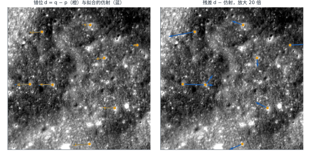
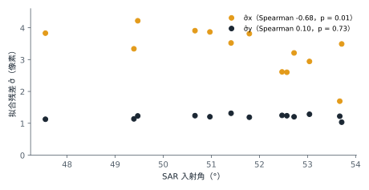

最小二乘拟合残差
例子
一个 patch 上有 8 对点。如果真实错位在 patch 内恰好是一个仿射变换，用最小二乘拟合出这个仿射后，剩下的残差只来自标注误差。如果真实错位比仿射复杂，残差里还带着没拟合掉的部分，由残差算出的 σ 就偏大。

原理 在每个 patch 内用仿射变换近似真实错位 g，把拟合后的残差当作标注误差的样本。g 中仿射描述不了的部分也留在残差里，所以估计值是 σ 的上界。点配准文献把这种残差称为配准点误差（fiducial registration error，FRE）。
计算 对每个 patch、每个坐标轴分别拟合
d = a·x + b·y + c
x、y 是光学点在 patch 内的坐标。跨 patch 汇总残差平方和 RSS：
σ̂² = Σ RSS / Σ (N − 3)
N 是该 patch 的点数。汇总前迭代剔除粗差：每轮找出学生化残差最大的点，超过 3 就剔除并重新拟合该 patch，直到没有点超过 3。
def fit_affine(p, d):
"""p：光学点 (N, 2)；d：偏差 q − p (N, 2)。返回残差与杠杆值。"""
X = np.column_stack([p, np.ones(len(p))])
coef, *_ = np.linalg.lstsq(X, d, rcond=None)
hat = np.einsum("ij,jk,ik->i", X, np.linalg.pinv(X.T @ X), X)
return d - X @ coef, hat
def pooled_sigma(residuals):
"""residuals：各 patch 的残差 (N, 2)。返回 (σ̂x, σ̂y)。"""
rss = sum((r**2).sum(axis=0) for r in residuals)
dof = sum(len(r) - 3 for r in residuals)
return np.sqrt(rss / dof)
结果 数据是验证集、测试集中有评测真值点的 1605 个 patch，共 13031 个点，每个 patch 7–11 个点。剔除 424 个点后，每轴自由度为 7792。
| σ̂x（像素） | σ̂y（像素） | |
|---|---|---|
| 剔除前 | 4.44 | 1.42 |
| 剔除后 | 3.47（3.41–3.52） | 1.21（1.19–1.23） |
括号内为 95% 置信区间。
剔除的点中有 126 个由 y 残差超限触发，约占全部点的 1%。剔除这些点后，y 残差的超额峰度由 10.1 降到 −0.15，这 126 个点是标注粗差。评测真值点文件保留原样。
13 个 ROI 各自的 σ̂y 在 1.03–1.31 之间；σ̂x 在 1.69–4.22 之间，并随 SAR 入射角减小而增大（Spearman 秩相关 −0.68，p = 0.01；σ̂y 为 0.10，p = 0.73）。标注误差与入射角无关，x 残差中多出的部分是仿射描述不了的错位，推测来自地形，未经验证。本方法因此只给出 y 方向的上界：σ̂y = 1.21 像素。

出处
- Fitzpatrick J. M., West J. B., Maurer C. R. Predicting error in rigid-body point-based registration. IEEE Transactions on Medical Imaging, 17(5), 1998. doi:10.1109/42.736021